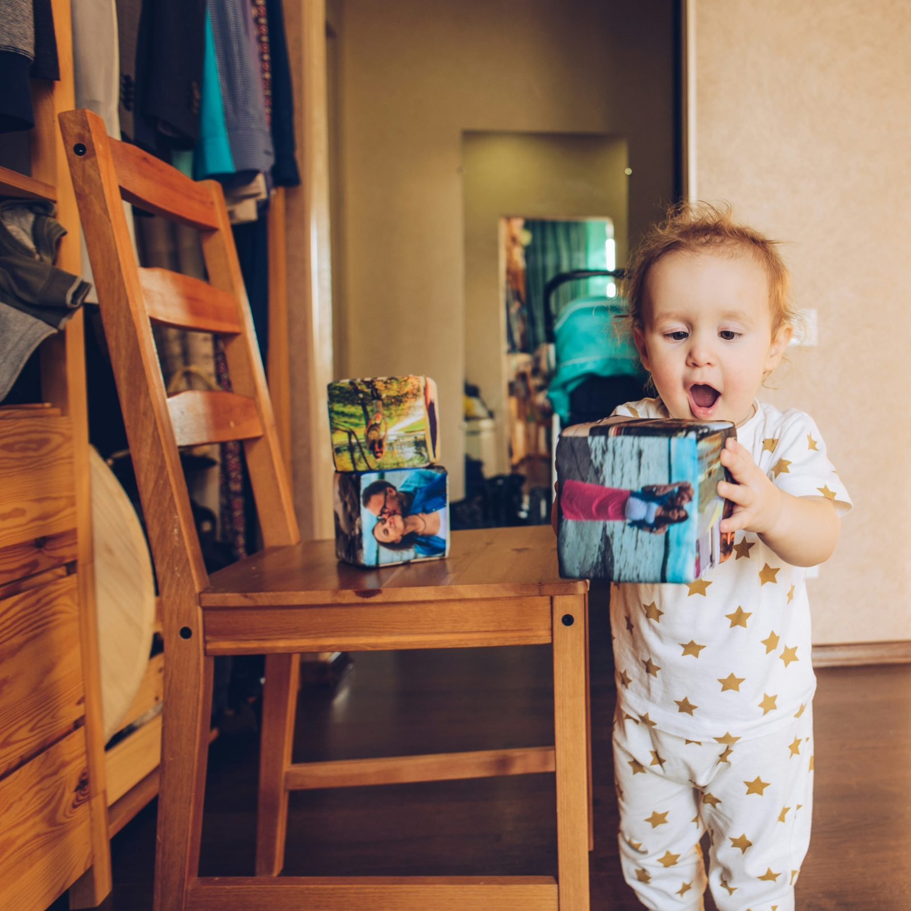

Discover the origin and meaning behind the iconic Italian expression "Mamma Mia"! Explore why Italians use this phrase and its deep cultural significance. Learn more about the powerful bond between mothers and children in Italian culture.
Scopri l'origine e il significato dell'iconica espressione italiana "Mamma Mia"! Esplora il motivo per cui gli italiani utilizzano questa frase e la sua profonda importanza culturale. Approfondisci il potente legame tra madri e figli nella cultura italiana.
Se hai mai sentito l'esclamazione "Mamma Mia!" e ti sei chiesto da dove venga questa espressione così coinvolgente, sei nel posto giusto! Gli italiani sono maestri nell'arte di usare gesti e modi di dire unici, e 'Mamma Mia' è certamente uno dei più iconici.
Questa espressione attinge alla profonda importanza della figura materna nella cultura italiana. La mamma è il punto di riferimento per eccellenza nella famiglia, offrendo conforto e premure che nessun'altra figura può eguagliare. Anche se non esiste una storia precisa sull'origine di 'Mamma Mia', molto probabilmente essa è nata dall'ammirazione e dal rispetto per il ruolo della madre, radicato nella storia, nella religione e nell'antropologia.
Un primo pensiero ci porta alla figura religiosa di Maria, madre di Gesù. L'esperienza di Maria durante la crocifissione di suo figlio cattura perfettamente il concetto dell'amore materno. Inoltre, il contatto precoce tra madre e bambino durante la gestazione e dopo la nascita sottolinea l'importanza unica della figura materna.
Gli italiani utilizzano 'Mamma Mia' per esprimere una vasta gamma di emozioni, come stupore, sorpresa, rabbia o delusione. È interessante notare come il tono e il contesto possano trasformare radicalmente il significato di questa semplice frase. Inoltre, in diverse regioni d'Italia, la parola "Mamma" viene pronunciata in modi divertenti e distintivi, come "Madre" o "Matruzza", aggiungendo un tocco locale alla celebre espressione.

La figura della madre è fondamentale anche nei momenti di dolore e malattia, poiché il suo affetto e la sua presenza alleviano le sofferenze. Pronunciare "Mamma Mia" in questi momenti riflette il desiderio di conforto materno e il potere lenitivo che solo una madre può offrire.
'Mamma Mia' è una frase potente perché evoca uno dei legami più importanti e indelebili della nostra vita. Se vuoi scoprire di più sull'amore materno e sull'importanza della figura della mamma, ti consigliamo di visitare PassioneMamma.it per ulteriori curiosità e aforismi sulla mamma.
fonte: Perché gli italiani dicono la frase: Mamma mia
Parole Chiave
| Espressione | Un insieme di parole che formano una frase importante |
| Importanza | Quanto è significativo o cruciale qualcosa |
| Figura | Una persona importante o significativa |
| Mamma | La donna che ha dato alla luce o cresciuto un bambino |
| Conforto | Sensazione di calma e tranquillità |
| Premure | Cura e attenzioni amorevoli |
| Radicato | Profondamente stabilito o fondato |
| Storia | Il racconto passato di eventi e azioni |
| Religione | Credenze e pratiche spirituali |
| Antropologia | Lo studio delle culture e delle società umane |
| Amore | Sentimento di affetto e attaccamento profondo |
| Crocefissione | La morte di Gesù sulla croce |
| Materno | Relativo alla madre o all'amore materno |
| Gesto | Un movimento o azione con le mani o il corpo |
| Modo di dire | Espressione linguistica tipica e non letterale |
| Iconico | Molto famoso e rappresentativo |
| Sorpresa | Sentimento di stupore o meraviglia |
| Rabbia | Forte sentimento di ira o frustrazione |
| Delusione | Sentimento di tristezza o insoddisfazione per aspettative non soddisfatte |
| Contesto | L'ambiente o la situazione in cui avviene qualcosa |
| Regioni | Aree geografiche specifiche |
| Dolore | Sensazione spiacevole o sofferenza |
| Malattia | Condizione di salute non buona, malattia |
| Affetto | Sentimento di amore e attenzione verso qualcuno |
| Lenitivo | Qualcosa che allevia o calma |
| Frase | Un insieme di parole che formano un'idea significativa |
| Legame | Unione forte o stretto rapporto |
Esercizio
Domande
- Da dove pensa l'articolo che provenga l'espressione "Mamma Mia"?
- Perché gli italiani usano spesso l'espressione "Mamma Mia"?
- Come viene collegata l'espressione "Mamma Mia" alla figura della madre nel testo?
- Quali emozioni possono essere espressi dagli italiani usando "Mamma Mia"?
- Secondo l'articolo, cosa rende "Mamma Mia" una frase potente?